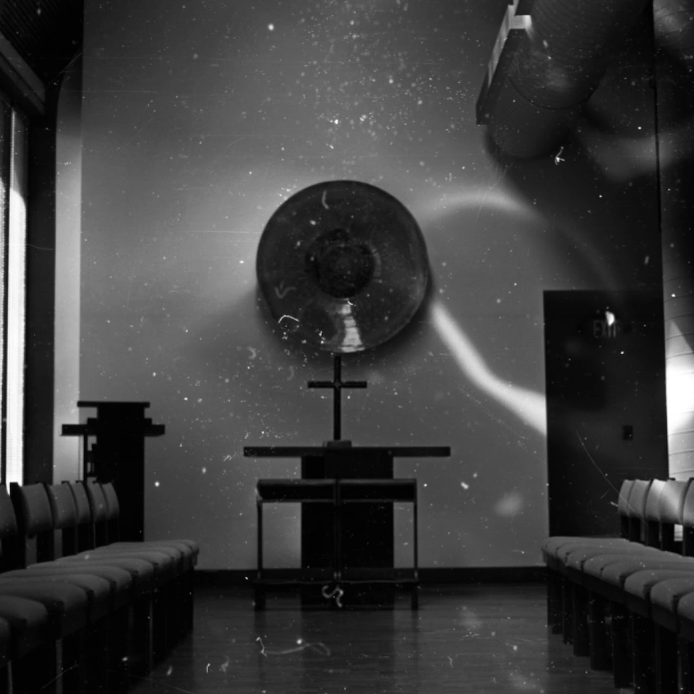

Photography series
Intro to Darkroom

Cover unavailable. Open the project to continue.(Intro to Film Development)
 Image unavailable. Open the original photograph.
Image unavailable. Open the original photograph.(Lightroom)
View additional photographs in the original series
- A roll of underdeveloped film
- Try to adjust the density and contrast in darkroom
- Scan and adjust raw image in Lightroom
- Get the repaired digital film
This is my second roll of film
AristaEDU 100 Black & White Negative Film
Here are the photos from this roll


 Image unavailable. Open the original photograph.
Image unavailable. Open the original photograph.

 Image unavailable. Open the original photograph.
Image unavailable. Open the original photograph.

 Image unavailable. Open the original photograph.
Image unavailable. Open the original photograph.(Intro to Enlarger)
Contrast filters 0, 2, and 4 were applied to achieve varying contrast levels
Silver gelatin print, enlarged from 35mm negative, 5 × 7 in.